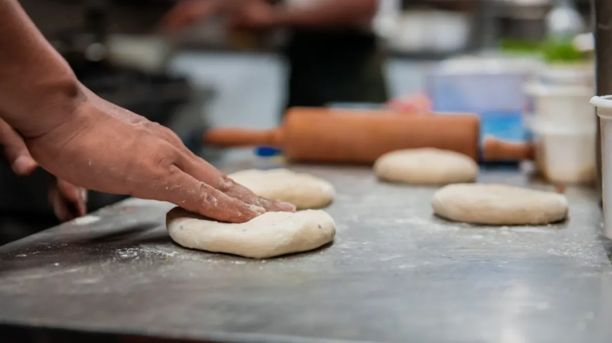
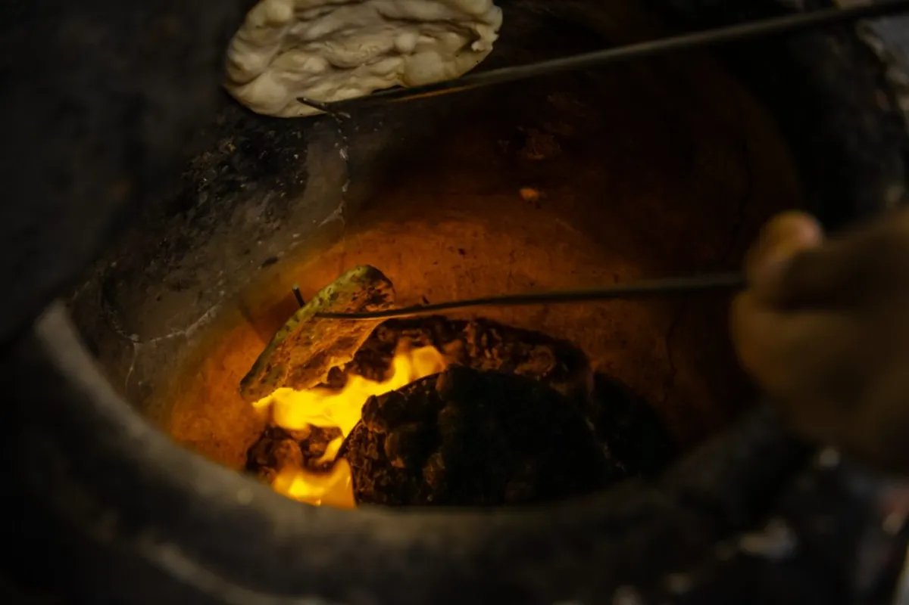
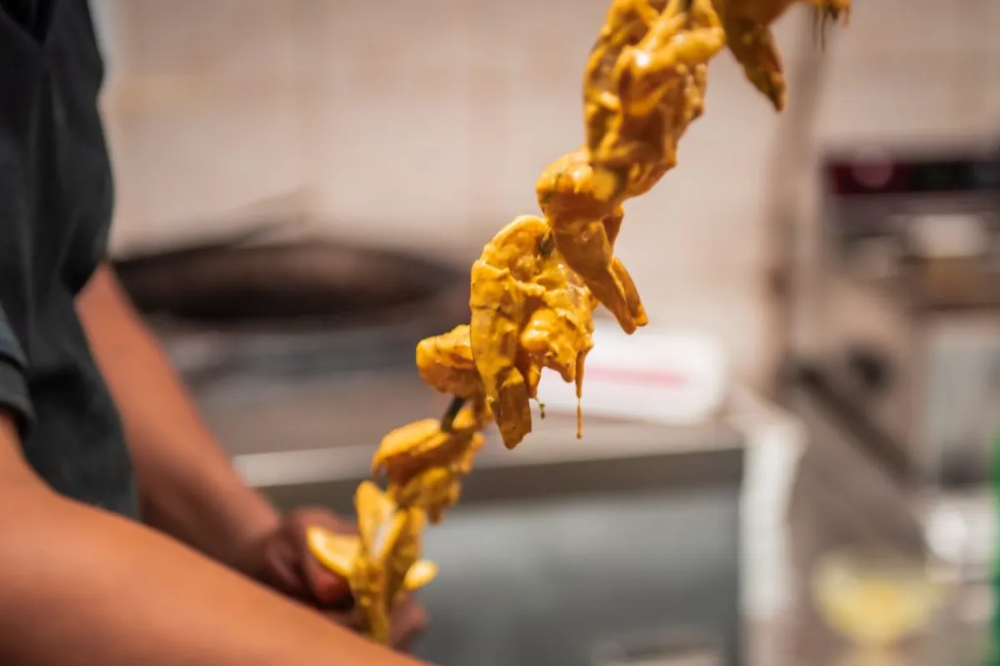
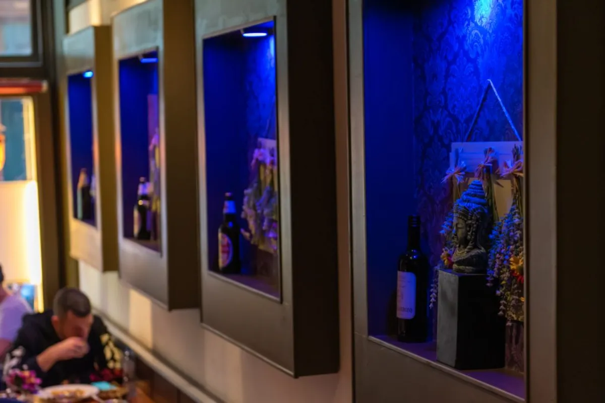
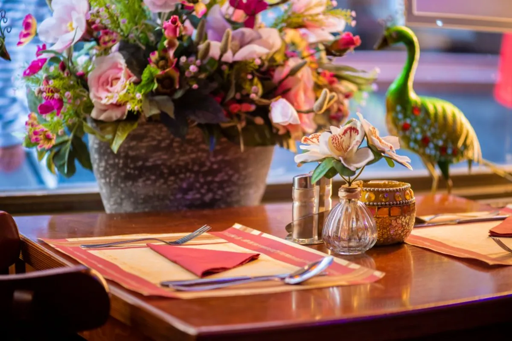
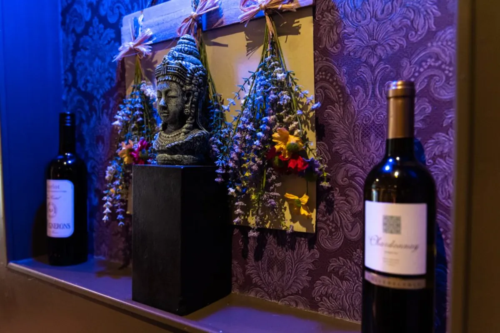
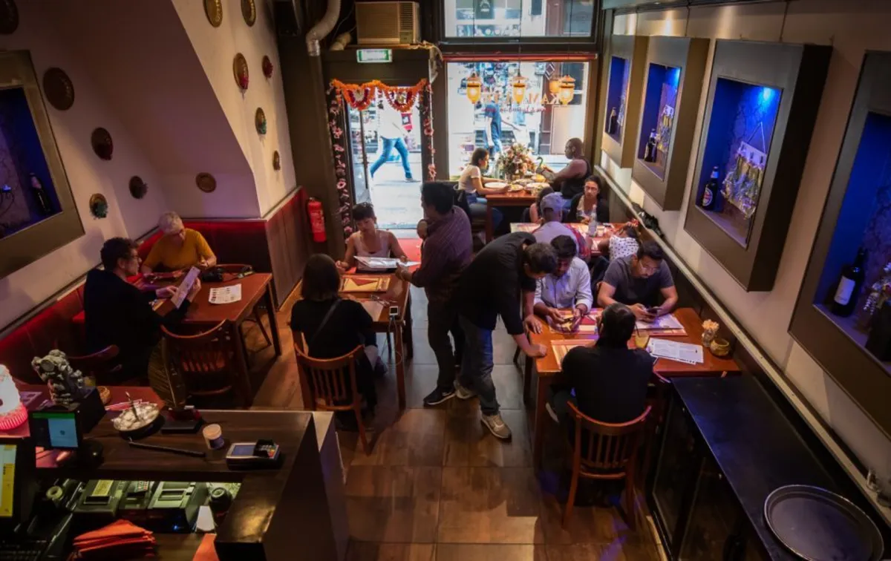
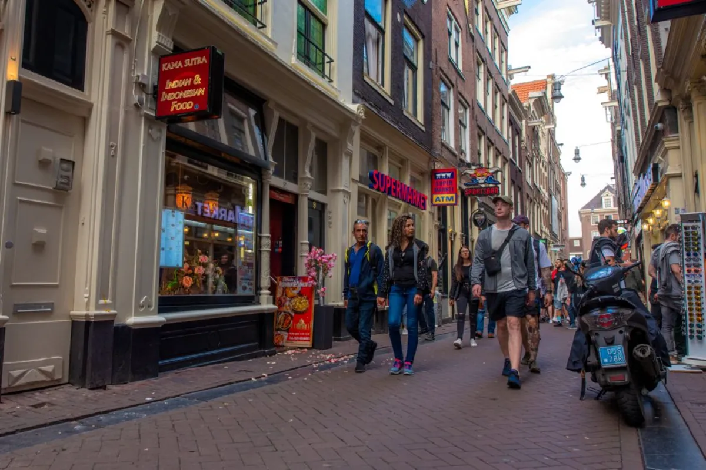

Vegetarisch menu
voor 2 personen
Saag paneer (spinazie met kaas), dal makhni (romige linzen), groentecurry, rijst, nan, raita, papadum en saus
€ 29,35
Indiaas restaurant aan de Lange Niezel, sinds 2004
Curry's, biryani en tandoori uit de houtskool-kleioven, in hartje Amsterdam. Kom bij ons eten, of laat het thuisbezorgen.
Vlak bij de Dam, de Wallen en Centraal Station serveren we sinds 2004 authentiek Indiaas eten, bereid met de verste ingrediënten en zorgvuldig gekozen kruiden en specerijen.
Onze nan wordt met de hand uitgerold en tegen de wand van de houtskool-kleioven gebakken. In dezelfde tandoor garen de gemarineerde kip, het lam en de grote garnalen.
Onze koks werken al lang met deze recepten. Ze combineren authentiek Indiase gerechten met een vleugje westerse invloed, en passen een gerecht graag aan uw smaak aan.
Bekijk de tandoorigerechten


De kaart in ons restaurant. Heeft u een allergie of een speciale wens? Laat het ons weten, we houden er graag rekening mee.
Alle curry's worden geserveerd met basmatirijst en gemengde groenten. U kiest kip, lam, vis of garnalen; de prijs hangt af van uw keuze.
Alle tandoorigerechten worden geserveerd met basmatirijst, linzen en salade.
Rijst, vlees en/of groenten, rozijnen, amandelen en kruiden, samen tot één smaakvol gerecht.
Als hoofdgerecht geserveerd met basmatirijst.
Aanbevolen bij uw curry of tandoori.
Zelfgemaakt, vers uit de houtskool-kleioven.
Prijzen onder voorbehoud.
voor 2 personen
Saag paneer (spinazie met kaas), dal makhni (romige linzen), groentecurry, rijst, nan, raita, papadum en saus
€ 29,35
voor 2 personen
Groentesamosa (2 stuks), mutter aloo (medium gekruide erwten en aardappel), chana ki dal (gele linzen), paneer makhni (Indiase kaas in room en boter), 2 x garlic nan, rijst, raita, saus en papadum
€ 34,95
voor 5-6 personen
Paneer jalfrezi, dal makhani, tempeh kokos, gado gado, 4 nan, 6 rijst, 3 raita, papadum, atjar, tempeh en cassavekroepoek
€ 75,00
voor 2 personen
Tandoori chicken (gemarineerde kippenbouten uit de tandoor), butter chicken (kip in romige saus), dal (linzen), rijst, raita, papadum en saus
€ 35,00
voor 2 personen
Meat samosa (2 stuks), sheek kebab (lamsgehaktrolletjes), chicken tikka massala (medium gekruide kipfilet in romige saus), 2 x garlic nan, dal (linzen), rijst, raita, saus en papadum
€ 40,00
voor 4 personen
Chicken korma (kip in romige saus met kokos en rozijnen), lamb rogan josh (medium gekruide lamscurry), Kamasutra special (gemengd gemarineerd vlees uit de Indiase oven), saag paneer, dal, nan, rijst, raita, papadum en saus
€ 69,50
voor 4 personen
Onion bhaji, sheek kebab, butter chicken, lamb rogan josh, chicken tikka, saag paneer, dal, nan, rijst, raita, papadum en saus
€ 81,50
voor 2-3 personen
Chana ki dal (medium gekruide gele linzencurry), gado gado (groenten met pindasaus), gemengde groentecurry, 3 rijst, 2 tandoori roti, atjar, tempeh, papadum en cassavekroepoek
€ 34,50
voor 3-4 personen
Mushroom bhaji (champignons met ui), chana masala (kikkererwten in medium gekruide curry), tempeh kokos, 4 rijst, 3 tandoori roti, atjar, tempeh, papadum en cassavekroepoek
€ 42,50
voor 2 personen (ook voor 4, 8, 10, 20, 30 of meer)
Gegrild lam met sojasaus, witte en gele rijst, lam in pittige kokossaus, lam in sojasaus, kip met rode peper en kokos, kipfilet met pindasaus, makreel in pittige saus, groenten met pindasaus, groenten in kokosmelk, tahu in currysaus, ei in pittige saus, boontjes in pittige saus, soja in pittige saus, gebakken kokos, kroepoek en atjar tjampoer
€ 40,50
voor 2 personen
Witte rijst, lam ketjap, kip met rode peper en kokos, makreel in pittige saus, kipfilet met pindasaus, groenten met pindasaus, groenten in kokosmelk, tahu in currysaus, ei in pittige saus, boontjes in pittige saus, soja in pittige saus, gebakken kokos, kroepoek en atjar tjampoer
€ 38,50
voor 4 personen
Butter chicken, chicken bhunna, lamb semur, tandoori chicken, 4 x kipsaté, 4 x rijst, 4 nan, sambal, serundeng, tempeh, atjar en raita
€ 67,50
10 personen
3 tandoori chicken, 4 butter chicken, 3 lamb rogan josh, dal, gemengde groenten, rijst, 5 nan, raita, papadum en saus
€ 146,00
20 personen
6 tandoori chicken, 8 butter chicken, 6 lamb rogan josh, dal, gemengde groenten, rijst, 10 nan, raita, papadum en saus
€ 282,00
30 personen
9 tandoori chicken, 12 butter chicken, 9 lamb rogan josh, dal, gemengde groenten, rijst, 15 nan, raita, papadum en saus
€ 419,50
40 personen
12 tandoori chicken, 16 butter chicken, 12 lamb rogan josh, dal, gemengde groenten, rijst, 20 nan, raita, papadum en saus
€ 563,50
50 personen
15 tandoori chicken, 20 butter chicken, 15 lamb rogan josh, dal, gemengde groenten, rijst, 25 nan, raita, papadum en saus
€ 702,50
Prijzen voor bezorgen en afhalen, zoals op onze bestelpagina.
Geserveerd met basmatirijst of nan, linzen en papadum.
Met basmatirijst, groenten en papadum. Keuze uit kip, lam, vis of garnalen.
Geserveerd met linzen en raita. Keuze: alleen groenten, alleen vlees, of vlees en groenten.
Als bijgerecht of als hoofdgerecht met basmatirijst en papadum (bijgerecht / hoofdgerecht).
Hoofdgerechten met witte rijst, kroepoek, atjar, serundeng en sambal.
Bezorgen is overal gratis. Minimaal bestelbedrag per postcode:
| € 15 | 1011–1013, 1015–1019, 1051–1057, 1071–1074, 1091–1094 |
|---|---|
| € 25 | 1014, 1058, 1075, 1077, 1079, 1095–1098 |
| € 30 | 1076 |
| € 35 | 1021, 1022, 1031, 1032, 1078 |
| € 40 | 1059 |
| € 60 | 1060–1062 |
| € 80 | 1023–1026, 1033–1036, 1041–1046 |
| € 90 | 1047, 1063–1069, 1111–1113 (Diemen) |
| € 100 | 1027, 1081–1083, 1086, 1087 |
| € 110 | 1028, 1175 (Lijnden), 1181–1185 (Amstelveen) |
| € 120 | 1115–1119 (Duivendrecht e.o.), 1121 (Landsmeer) |
| € 140 | 1101, 1102 |
| € 150 | 1151–1154 (Waterland), 1161, 1165, 1171, 1381–1383 (Weesp) |
| € 200 | 1131 (Volendam) |
Tijdelijk bezorgen we niet in 1103–1109 (Zuidoost). Afhalen: minimaal € 15,00.
"Kamasutra" is een eeuwenoud Sanskriet woord uit India, dat vaak wordt verbonden met liefde, verbondenheid en expressie. Die geest brengen we aan tafel. Kom met familie, vrienden of collega's: we hebben plaats voor 55 gasten.




Kregen ieder een plateau vol met diverse Indiase gerechten, met rijst en naanbrood. Alles smaakte prima en het was ruim voldoende. Aardig personeel. Echt een aanrader om hier te eten.

We hebben gekookt voor bedrijfsevenementen, bruiloften, verjaardagen en grote sociale en culturele evenementen: van 30 tot meer dan 2000 gasten. Kies uit onze hele kaart.
Liever een feest of zakelijk diner in ons restaurant? Dan regelen we ook een DJ, fotograaf of live entertainment. Bespreek het met onze manager.
Catering tot 50 personen bestelt u direct online, bijvoorbeeld met een van onze partymenu's.
Direct bestellenBel ons, zeker als u een speciaal menu wilt of een allergie heeft. U kunt ook hier een aanvraag doen.
020 626 00 03| Restaurant | Bezorgen | |
|---|---|---|
| Maandag | gesloten | gesloten |
| Dinsdag | gesloten | gesloten |
| Woensdag | 16:00–23:00 | 16:00–23:00 |
| Donderdag | 16:00–23:00 | 16:00–23:00 |
| Vrijdag | 16:00–23:00 | 16:00–23:00 |
| Zaterdag | 16:00–23:00 | 16:00–23:00 |
| Zondag | 16:00–23:00 | 16:00–23:00 |